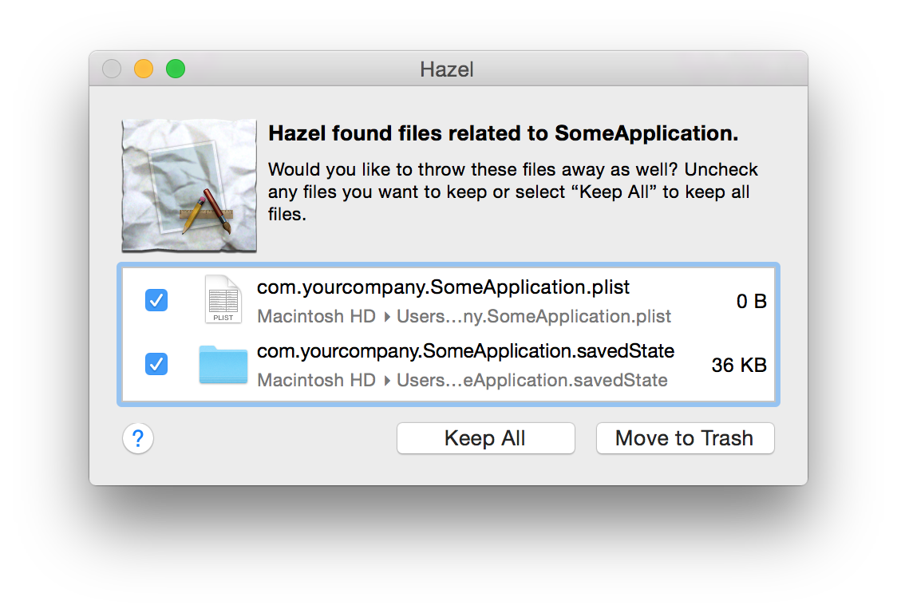

Uninstalling applications with App Sweep
Uninstalling other applications is easy with App Sweep. To use App Sweep, it must be enabled in the Trash pane.
To uninstall an application:
- Drag the application to the Trash.
- If there are any support files for the thrown-away application, Hazel will bring up a panel displaying them:
- If there are any files you'd like to save, uncheck them or if you do not want any of the files thrown away, click "Keep All"
- Click "Throw Away" to throw away the selected support files.

If you find you want to re-install the software, just pull it out of the Trash and put it back where you found it. Hazel will offer to re-install any support files it threw away previously. Also, if you need to salvage the support files manually, you can find them in the Trash listed under the application's name.